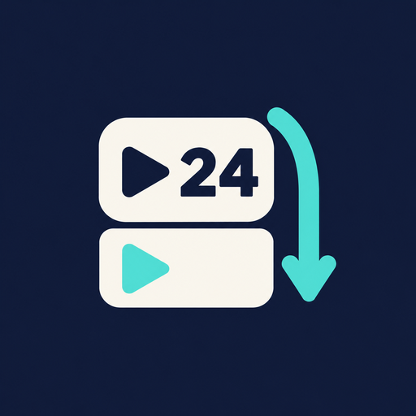

ScrollCount
Understand your scrolling habits. Count Instagram Reels and YouTube Shorts on your phone, with one live Scrolls badge and optional private sharing with friends.
Counting works offline. Accessibility access starts only after you agree and enable it in Android settings.
Ashwini Dhatterwal · ScrollCount